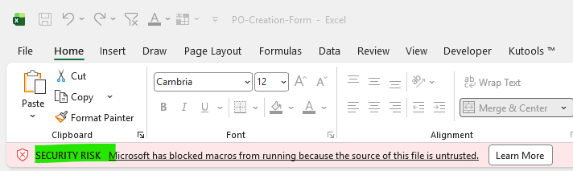
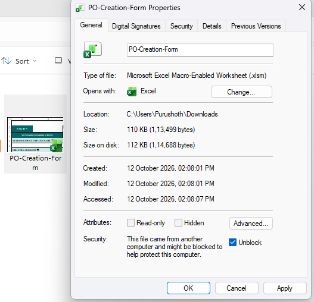

PO Creation
Create a new Purchase Order with the required details.
Create a new Purchase Order with the required details.
Increase, reduce or update an existing PO.
Close an existing PO as per the applicable process.
Prepare these details before raising a new Purchase Order request.
Quick note: 7 fields are required. Region, Requestor Name (KO FTE), Vendor Contact Email and Delivery Date are optional.
11 fields in totalUse the short notes below to prepare your request.
Download the template, fill in the details, then email the completed file to the GRW mailbox.
Unblock only the official PO-Creation-Form.xlsm file you received from a trusted GRW source. You do not need to change Excel’s general macro settings.
Close the PO Creation workbook completely.
Open the folder where you saved the template. Right-click PO-Creation-Form.xlsm.
Select Properties, then stay on the General tab.
Under Security, tick Unblock if that option is shown.
Click Apply, then OK. Reopen the template.

View larger ↗
View larger ↗Still seeing the warning?
If the Unblock option is missing or the message remains, contact your IT team or email grw-global-p2prequests@coca-cola.com. Do not enable all macros or lower Excel’s overall security settings.
Download the official PO Creation Excel Template.
Fill in the request, financial/vendor and delivery details. Check the Required and Optional labels.
Use the vendor reference links and Plant Code workbook where available. Check OPEX/CAPEX coding with your Finance Team.
Check names, currency, PO value and delivery details. Save the completed file without changing the .xlsm format.
Send the completed template and any applicable supporting documents to grw-global-p2prequests@coca-cola.com.
Note: Approval is routed based on the KO FTE details provided. If you need to use a different KO FTE, include that employee’s details in your request.
Need to change an existing PO? Choose the change below to see what the GRW team can update and what details to provide.
Select a card to view the guidance.
Choose one of the colorful cards above to see the information the GRW team needs.
Email the GRW team if you are unsure which change route applies.
Before requesting closure, make sure the PO has no over-consumption, blocked invoices or posted invoices awaiting payment.
If any of the conditions below apply, the PO cannot be closed until the issue is resolved.
Compare the PO value with the total invoiced amount. If the invoiced amount is higher than the PO value, the PO cannot be closed.
Resolve the over-consumption through the applicable process before requesting closure.
If any invoice on the PO has a block status, the PO cannot be closed. Contact the respective team to review and resolve the block.
Block A is activated by default for non-PO invoices during payment processing.
An invoice may already be posted but still unpaid. If payment is pending for any invoice on the PO, the PO cannot be closed yet.
Wait until the pending payment issue is resolved, then follow the applicable closure process.
Default block: Block A is activated by default for all non-PO invoices during payment processing.
WManual blockRPrice variance / QuantityAManual block – MiscellaneousWManual block – No WFJAutom Part Bank TypeSSupply Chain FinanceRInvoice verificationDVN duplicate verificationMIntercompanyQManual block – PayrollBManual block – BudgetTTax Exception*Skip accountThe supplied reference contains repeated codes (A, W and R) with different descriptions. Use the actual block reason shown on the invoice and confirm unclear abbreviations with the relevant invoice or payment team.
The GRW team will check that the PO is not over-consumed, no invoices are blocked, and no posted invoices are awaiting payment. If all checks are clear, we will submit the PO closure request. If we identify an issue, the GRW team will contact you with the next steps.
Contact the GRW team if you need guidance on the next step.
Clear answers for PO Creation, Amendments and Closure — so you can prepare the right information and avoid preventable delays.
Small checks that can help prevent a request from being returned.
Quick fix: Complete the 7 required fields before sending the request.
Quick fix: Check both values against the vendor reference tools.
Quick fix: Confirm OPEX/CAPEX coding with your Finance Team.
Quick fix: Provide the PO number, line item, current value and requested new value.
Quick fix: For currency, vendor or plant/address changes, close the existing PO and create a new one.
Quick fix: Obtain OREX or CAPEX Controller approval before the request proceeds.
Quick fix: Tell the GRW team whether the invoice is unposted, posted but unpaid, or posted and paid.
Contact the GRW team for guidance specific to your PO or request.
Find the right next step when you need clarification about PO Creation, amendments or closure.
Check the mandatory fields, examples and common mistakes before raising a request.
Use your official process document for exact definitions, approval rules and exception handling.
Use the latest approved version.For process questions that are not covered in this guide, email the GRW support mailbox.
grw-global-p2prequests@coca-cola.com ↗Send your question to the GRW mailbox. Include the process type and PO number, if applicable.